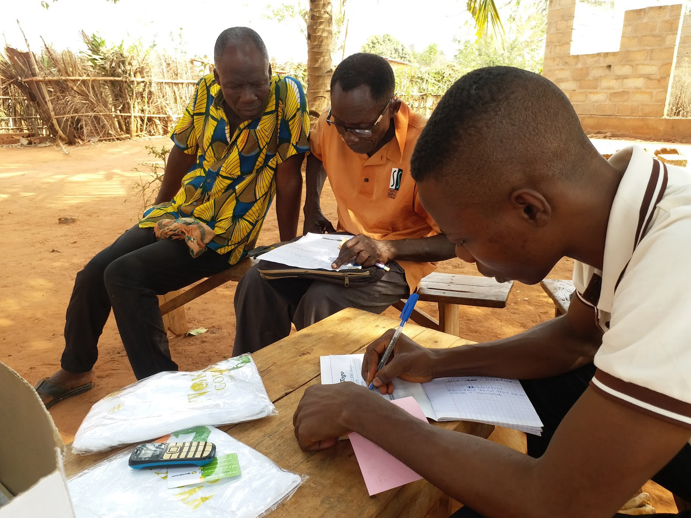

View the original article on WorldCover's blog here.
With 640 new DApps created on the Ethereum blockchain in just 2017, more and more companies are realizing the benefits of public blockchains.
WorldCover is no different. Founded in 2015 by MIT engineers, WorldCover is a parametric crop insurance platform for farmers in lower income countries. We insure farmers against catastrophic weather events, like droughts, which destroy farmers’ crops. 95% of agriculture in places like Ghana is rainfed, so the threat of droughts is pervasive, and it makes it difficult for farmers to obtain loans and invest profitably in their farms.
Instead of relying on in-person loss assessments to determine claims, which are costly and time consuming, WorldCover uses weather observations to automatically trigger payouts to policyholders. This is how we “parameterize” our risks: payouts to customers rely on an “index” of rainfall or weather data, not on customer actions that are susceptible to fraud and costly to monitor.
For example, a maize farmer in northern Rwanda might become eligible for a claim if less than 200mm of rainfall is observed during her growing season. Once the rainfall is measured — either by satellite or by ground observations — a claim payment can be instantly sent via mobile money (like M-PESA) to a customer’s wallet.
WorldCover has also built a network of capital providers and investors, who accept the financial risk of paying for drought claims in return for participating in the premium income that WorldCover collects from customers. This is a diversified investment because weather in Africa is unrelated to traditional investments like stocks and bonds.
WorldCover’s business model is highly amenable to a blockchain application, as there are objective rules for transferring value. Public blockchains enable products that are:
In the context of WorldCover, trustless means a guarantee that all contracts receive payouts as promised, time-stamped gives policyholders proof that they own a contract and all stakeholders the ability to view executed transactions, and digital identity ownership offers policyholders the freedom to transfer and control their historical financial transactions.
Last year, WorldCover and I began talking about using blockchain technology to create a seamless exchange between capital providers (like reinsurance companies) and policyholders. We envisioned a market where reinsurers insure policyholders by pushing funds to a smart contract that executes when certain rainfall conditions are met, while providing reinsurers with regular dividends. With this as our ultimate goal, we’re starting with a smaller project to get our feet wet with blockchain technology and to determine how it can best fit into WorldCover’s platform.
Since then, we have been building a smart contract that simulates our insurance contracts and logs related transactions to the Ethereum blockchain (e.g., if a payout was made to a farmer, this transaction would be logged to the blockchain). Each of these transactions are publicly viewable on the blockchain. The first transaction represents the simulation of a real insurance contract, with every subsequent transaction representing automatic payouts to policyholders once real-time weather data triggers a payout.
Here is an example use case: a regulator in India would like to verify whether WorldCover has been acting on their promises to farmers (i.e., that we’ve been making proper payouts). Currently, WorldCover and its insurance partners provide this regulator with access to their internal database of contracts as proof of payment. This method is inefficient, discloses more about customers’ contracts than necessary, and relies on trust of WorldCover and its partners.
With our smart contract solution, the regulator verifies the status of our insurance contracts on the blockchain, which confirms payments while concealing customers’ personal data and WorldCover’s proprietary data.
Considering that WorldCover sells parametric crop insurance, payouts can be triggered by weather data available from both external parties such as EARs, NOAA, as well as private sources such as Spire Global and Weather Analytics. With that said, the value of using blockchain for our purposes is not in showing stakeholders that a past contract triggered the proper payout amount, but in showing that we followed through with our promises to pay farmers.
While in its early stages, blockchain technology clearly has the potential to enable great benefits to the insurance industry, and agriculture or weather insurance in emerging markets is no exception. WorldCover is driven by data and technology innovation. Our efforts to incorporate blockchain technology into our infrastructure aligns with our mission to bring affordable, reliable, and trustworthy crop insurance to hundreds of millions of farmers around the world.
In future posts, we will delve deeper into the technical underpinnings of how we’re using blockchain technology and share our thoughts on developing in this ecosystem.